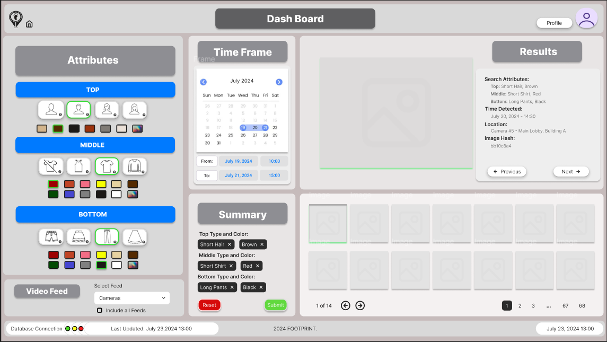
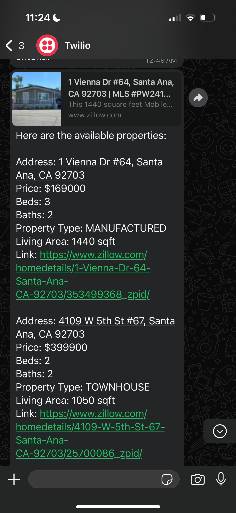
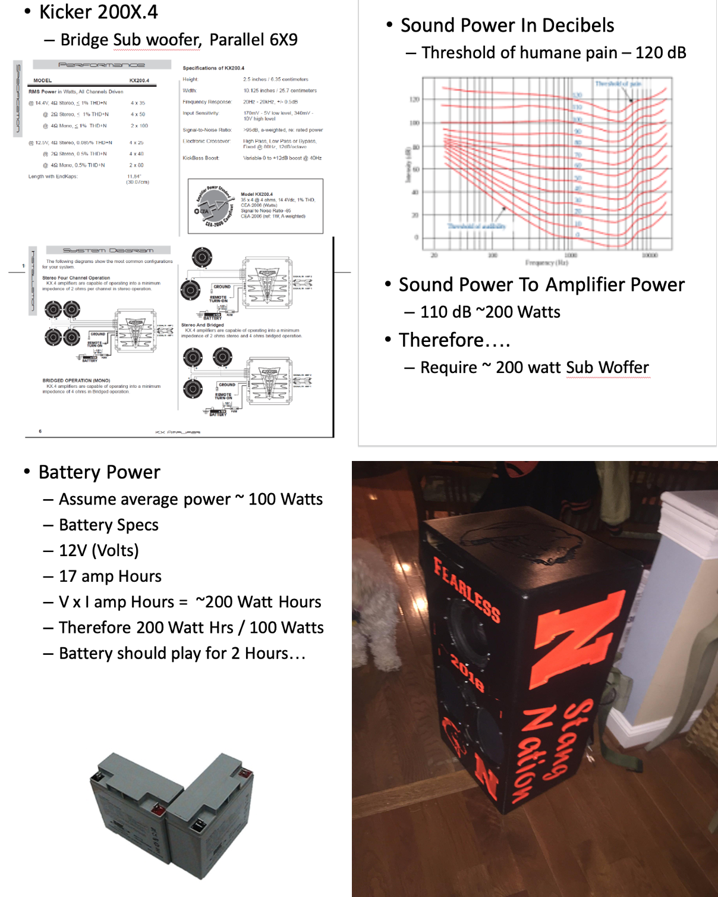

Featured Projects
Live NBA Display - CSC 4110 Software Engineering
Under my leadership as the Team Leader and Product Owner, a team of 6 students developed the Live Sports Display project with a focus on delivering a real-time sports visualization experience. This project, built on a Django framework and developed in Visual Studio Code, is hosted on Heroku, a cloud-based application service. Utilizing tesseract-OCR for intelligent image analysis, our web application processes user-uploaded screenshots of fantasy basketball teams. This data is then conveyed through SSH to a Raspberry Pi, driving the 3 ws2812b LED panels. To manage this process efficiently, we employed Celery with Redis to handle asynchronous task execution, ensuring a responsive and scalable system. While the project's core functionality is operational, we continue to work and aim to have this finished by May 2024. We will enhance the user interface and construct a 3D printed case for the hardware components. Please contact me for a longer video or explanation as GitHub only supports files less than 25 MB.
View on GitHub | Visit the Live Sports Display Website

"Footprint", Find Missing People (In Progress) - CSC 4996 Senior Capstone Project
Footprint is our senior capstone project developed by a team of four, designed to rapidly locate missing individuals by analyzing live video feeds and recognizing people based on clothing and appearance without requiring specialized equipment. To overcome challenges like frequent outfit changes and environmental factors, it combines features such as color, texture, time, and location using advanced image processing techniques and a comprehensive dataset. The tech stack includes Python for backend development, PyTorch for machine learning, Roboflow for dataset management, OpenCV for image processing, YOLOv5 for object detection, Django as the web framework, and HTML, CSS, and JavaScript for the frontend. An example of the dashboard is provided, and this page will be updated on November 23rd with the latest features.
"Get Out", Room Occupancy Detection (In Progress) - CSC 5991 001 Computer Vision
This project is currently in development and is expected to be completed by late November. It utilizes a Raspberry Pi with a camera, YOLO (You Only Look Once) for real-time object detection, and TensorFlow Lite to monitor the number of people in a room. The system processes video frames continuously, detecting and counting people. A REST API, built using Flask, sends this data to a mobile app, which updates the room's crowd metrics in real-time. The mobile app, developed in React Native, displays the room's occupancy and provides notifications if the room becomes too crowded.
Check back late November for photos and updates of this project.
Automated Apartment Search Tool - Personal
This project integrates Zillow's API and Twilio's WhatsApp messaging service to automate the search for rental properties. It retrieves apartment listings in a specified location based on user-defined criteria such as price range, number of bedrooms, and bathrooms. The tool filters results based on key features like parking and laundry, and automatically sends the details to the user's WhatsApp. The project simplifies the apartment search process by providing real-time updates on available properties directly to the user’s phone.
Speaker Backpack - Personal
Initiated at the age of 16, the Speaker Backpack was my first engineering project, where I repurposed speakers from my brother's Dodge Neon and integrated an 8" sub, powered by a 12V DC battery. The design incorporated an echo chamber to optimize sound output, applying basic audio engineering principles. While the 70lb backpack was not the most practical in terms of portability, it was a hit at football practices and basketball games, teaching me about audio engineering, amp wiring, circuitry, and fabrication using heavy machinery like the shop bot.
Cylindrical LED Display with Sound Sensor - Personal
Designed as a "totem" for music festivals, this project utilized ~1200 individually addressed RGB pixels attached to an 8-foot carbon fiber pole to create distinguishable pattern algorithms visible from a distance. Integrated with a sound sensor and Arduino, the display responded to bass frequencies, altering patterns during music "drops". My brother graciously assisted with the coding aspect, while I took the lead in the hardware development and overall design of the project. While it garnered interest for purchase, it was not pursued due to cost-effectiveness and market size. This project enhanced my knowledge in matrix manipulation, transformation, and data vectoring, and was a wonderful experience in collaborative work and leadership.

Replacing the Exhaust Manifold on a 4.6L V6 Boat Engine - Personal
My friend and I embarked on a journey to refurbish a 1995 Regal speed boat, purchased for around 2 thousand dollars. Upon discovering a crack in the exhaust manifold and subsequent rust inside, we disassembled the engine, installed a new part, and retuned the engine. Despite initial stalling issues due to our tuning, professional retuning made it fully operational. This project provided insights into engine mechanics, tuning, and failure analysis.

Research Paper Summary 1: Privacy-Preserving Deep Learning - CSC 5991 002 Secure Machine Learning
I will be presenting on the topic of privacy-preserving deep learning, specifically focusing on the paper 'Privacy-Preserving Deep Learning' by Shokri et al. This research explores how distributed learning techniques enable machine learning models to be trained without exchanging raw data between participants, thereby enhancing privacy within deep learning systems.
This presentation will be held on:
- October 8, 2024 (Tuesday): Privacy-preserving deep learning
A full report on this paper will be linked below.
Read the full paper here.

Research Paper Summary 2: Differential Privacy Attacks in Machine Learning - CSC 5991 002 Secure Machine Learning
I will be presenting on the topic of membership inference attacks in machine learning, focusing on the research paper "Membership Inference Attacks Against Machine Learning Models" by Shokri et al. The presentation will cover how these attacks exploit differences in model behavior to infer whether specific data points were part of the training dataset.
The presentation will be held on two different dates:
- November 19, 2024 (Tuesday): Machine learning with membership privacy using adversarial regularization
A full report on the paper and its findings will be linked below.
Read the full paper here.